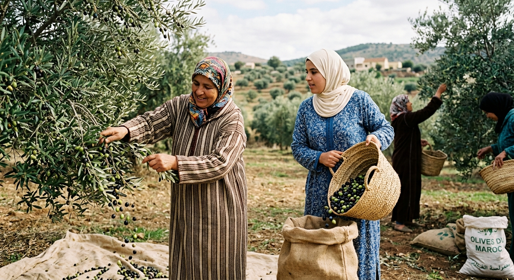

Thimdrine est une coopérative féminine située dans la région de Nador, au cœur du
Rif marocain.
Elle réunit 25 femmes passionnées qui travaillent avec savoir-faire et authenticité
pour proposer
des produits locaux de qualité, notamment le miel de thym, l’huile d’olive et la
confiture de figue de barbarie.
À travers ses produits, Thimdrine valorise les richesses naturelles du Rif tout en
soutenant le travail et
l’autonomie des femmes de la région. À travers son activité,
Thimdrine ne cherche pas seulement à proposer des produits de qualité.
La coopérative souhaite également valoriser le patrimoine du Rif,
faire connaître les produits locaux et soutenir les femmes de la région en leur offrant une activité professionnelle et une source
d’autonomie.
